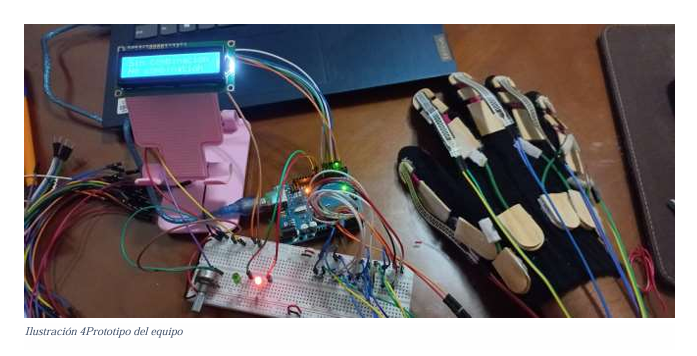

¿Cómo funciona SOFCEY?
✋captura de Movimientos
El guante tiene sensores que capturan los movimientos de los dedos y las manos para detectar gestos. Estos sensores son lo que permiten interpretar las señales del lenguaje de señas.
⚙️ Procesamiento de Señales
Los movimientos capturados son procesados por el microcontrolador, que identifica los gestos realizados por el usuario, utilizando un sistema de comparación con una base de datos de gestos predefinidos.
🔤 Traducción a Texto
El sistema traduce la seña identificada a texto, que luego se muestra en una pantalla o dispositivo móvil, permitiendo que otros usuarios puedan leer lo que se ha señalado.
📲 Visualización y Comunicación
En versiones más avanzadas, los datos procesados se pueden enviar mediante comunicación serial, WiFi o Bluetooth hacia una aplicación móvil desarrollada con Flutter o hacia una plataforma web (Node.js, JavaScript) para análisis remoto.
🔋 Alimentación Eléctrica
Para mantener el dispositivo totalmente portátil, SOFCEY funciona con una batería recargable de litio (modelo 18650) junto con un módulo de carga TP4056, lo que permite que el guante se use sin estar conectado a una fuente de alimentación externa todo el tiempo.
📐 Diseño Físico
El guante ha sido diseñado utilizando SOLIDWORKS y manufacturado mediante impresión 3D con filamento PLA. El diseño modular permite que los sensores se integren cómodamente, sin afectar la movilidad ni causar molestias al usuario.
🧩 Componentes de Hardware
- Resistencias flexibles: Detectan la curvatura de cada dedo al realizar una seña.
- Acelerómetro / Giroscopio: Mide la orientación y movimiento de la mano completa.
- Sensores de presión: Permiten interpretar gestos donde se requiere contacto.
- Arduino Nano: Microcontrolador que recibe los datos de los sensores y los procesa.
- Pantalla LCD (opcional): Muestra la traducción textual directamente en el dispositivo.
- Batería recargable: Proporciona energía al guante, haciéndolo portátil.
💻 Software y tecnologías utilizadas
- Python: Para interpretar señales del guante conectadas a la Raspberry Pi.
- Dart + Flutter: Para el desarrollo de una aplicación móvil multiplataforma.
- JavaScript + Node.js: Backend de soporte para análisis y visualización de datos.
- Raspbian: Sistema operativo que corre en la Raspberry Pi 4B.
- Notion: Organización de tareas bajo metodología Scrum.
🧠 ¿Cómo se traduce el lenguaje de señas?
Cada movimiento o gesto con los dedos produce una variación de resistencia eléctrica en los sensores flexibles. El Arduino mide estos cambios y, con la ayuda del código, los convierte en letras o palabras del alfabeto. Además, el acelerómetro y los sensores de presión permiten interpretar el contexto y la intención del gesto.
El sistema puede enviar estos datos a una pantalla o incluso convertirlos a voz utilizando librerías de síntesis de texto (TTS). En futuras versiones se busca usar aprendizaje automático para mejorar la precisión de la interpretación.
📸 Imagen del prototipo en funcionamiento
Ilustración 4: Prototipo del equipo con sensores, Arduino y pantalla LCD